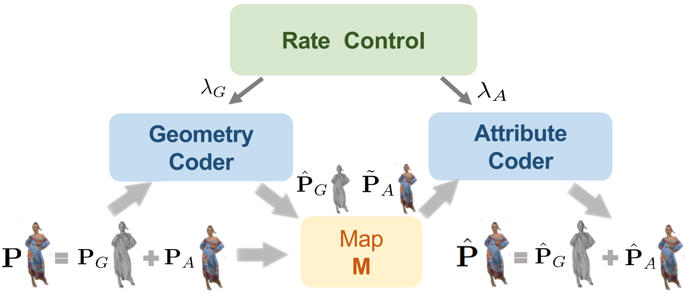
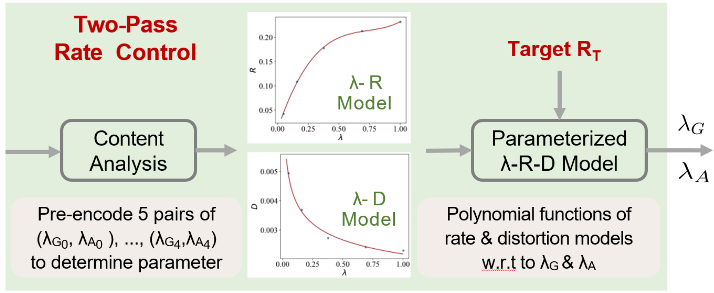
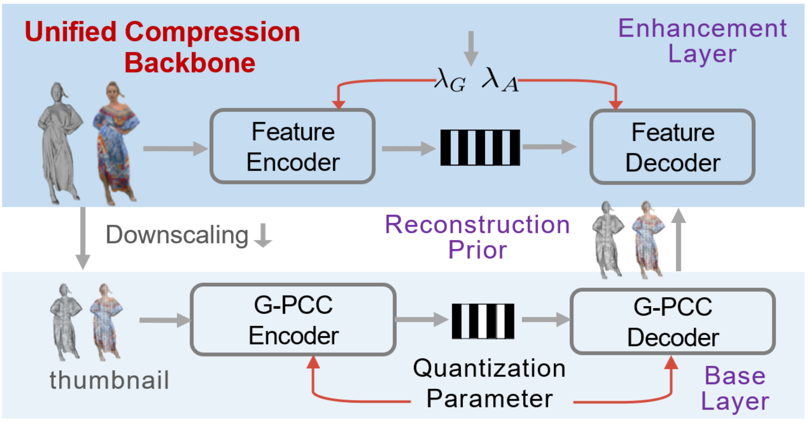
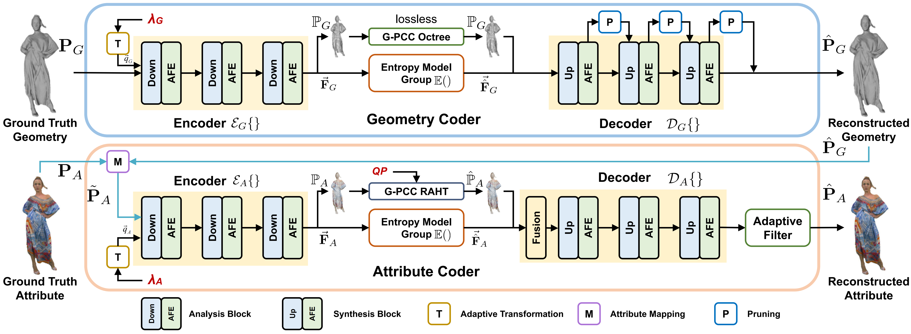
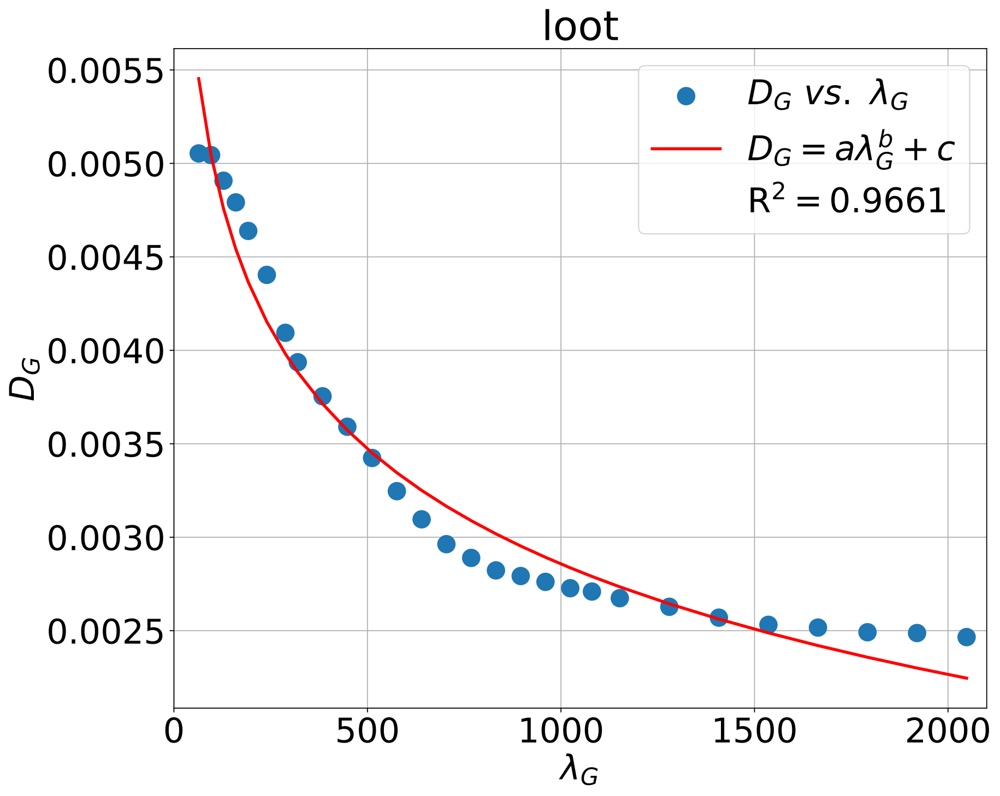
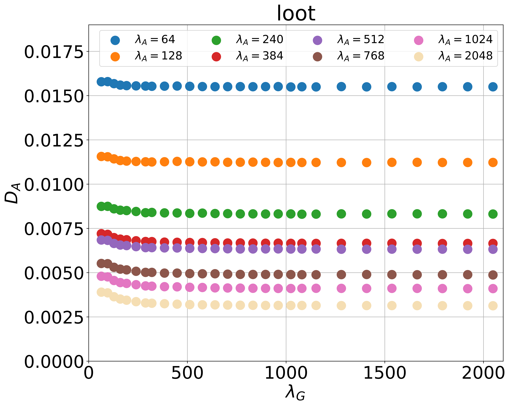
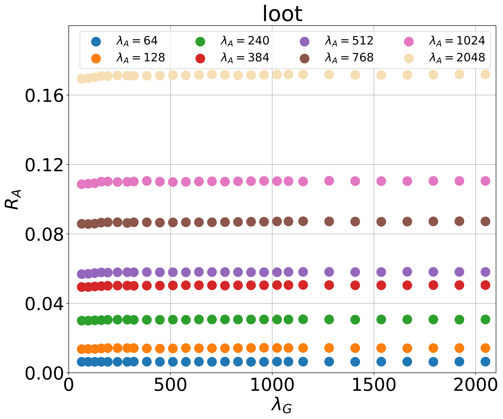
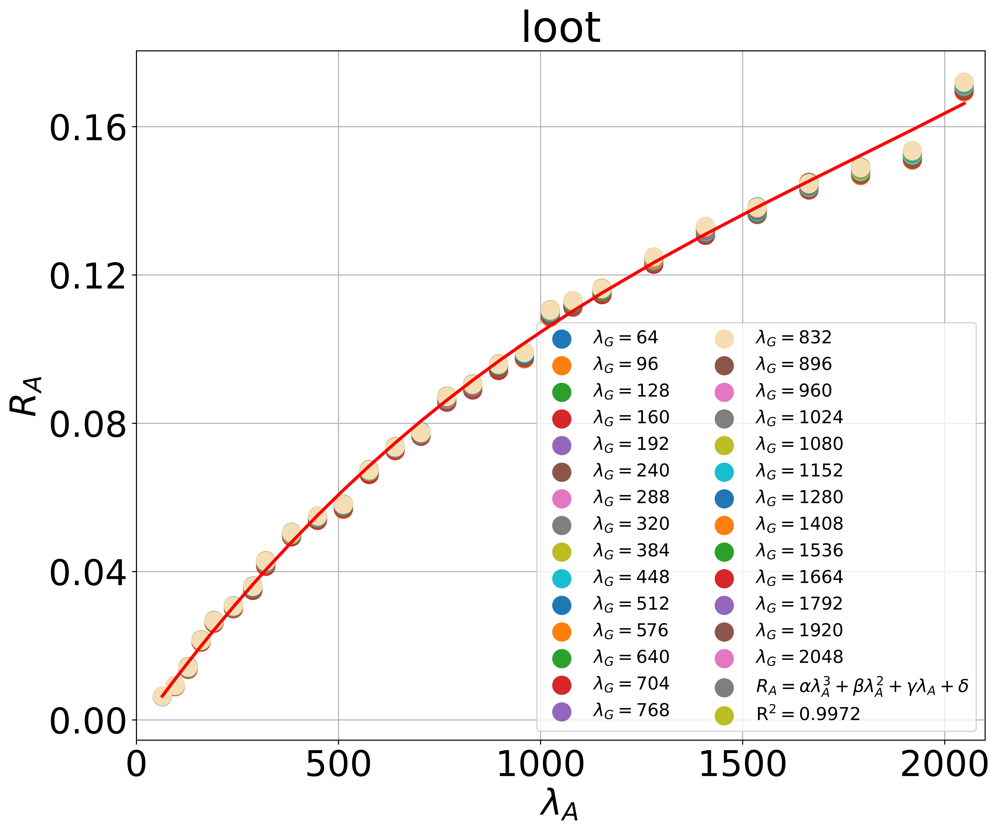
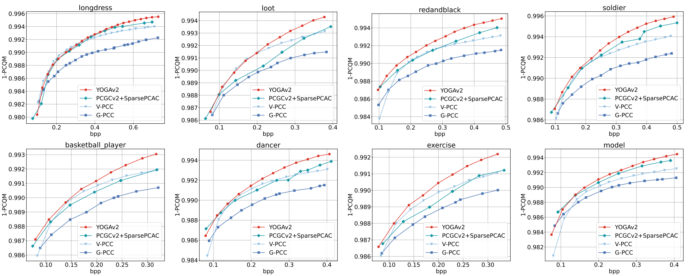
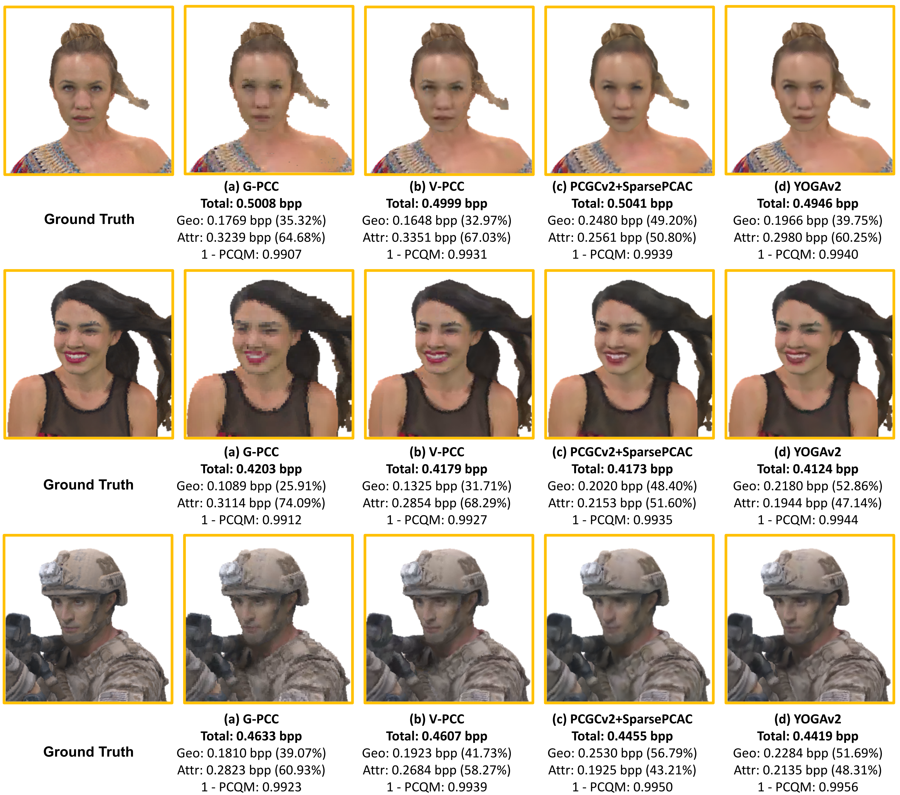

A layered point cloud compressor, YOGAv2, is proposed to efficiently encode colorful and relatively dense object point
clouds vastly used in Augmented/Virtual Reality (AR/VR) applications. It is flexible, capable of compressing geometry
and attribute information, separately and jointly, in pursuit of optimal quality under any given bitrate budget; it is
high-efficiency, significantly outperforming the latest G-PCC standard quantitatively and qualitatively, e.g., more than
30% BD-BR gains using PCQM (Point Cloud Quality Metric) to assess superimposed geometry and attribute artifacts; and it
is lightweight, e.g., presenting similar runtime as the G-PCC codec and just desiring a single neural model for encoding
each component, which owes to parallel entropy coding and variable-rate support. T o this end, YOGAv2 develops a unified
compression backbone for separate geometry and attribute compression. The backbone uses a two-layer structure, where the
downscaled thumbnail point cloud is encoded using G-PCC at the base layer. Upon G-PCC compressed priors, sparse
convolutions are stacked in a multiscale manner under an end-to-end variational autoencoder (VAE) framework at the
enhancement layer to compactly represent the full-resolution sample.
Overview



Compression Backbone

Rate Control Strategy




Combining rate and distortion models developed in previous sections, bit allocation is extended to:
Rate Control Efficacy
We compare brute-force Full Search Mode and the proposed Analytical Prediction Mode to quantify the efficacy of rate control in YOGAv2:
Compression Performance
We evaluate YOGAv2's performance of overall compression:

Visualization
We provide visual comparisons of the reconstructed point clouds from G-PCC, V-PCC, PCGCv2+SparsePCAC and YOGAv2.

Subjective User Study is further performed to understand the capacity of the proposed YOGAv2. YOGAv2 and V-PCC exhibit a clear lead in visual presentation to other approaches. We conduct a subjective user study for perceptual quality assessment for these two methods.